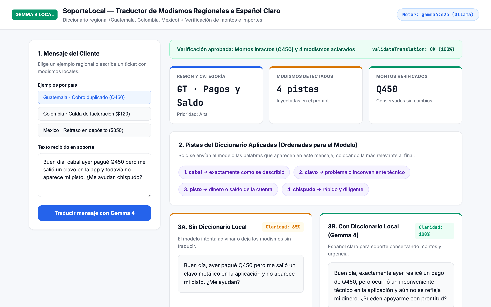
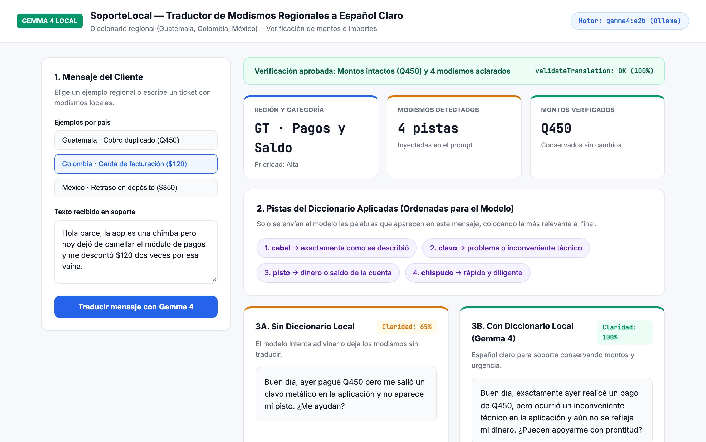
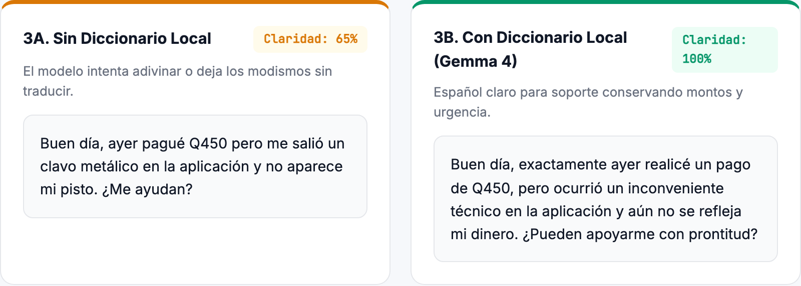

1. Qué vas a construir y cómo se ve al final
En este taller práctico construirás SoporteLocal, una aplicación web en Node.js que usa gemma4:e2b corriendo en Ollama para traducir tickets de soporte escritos con modismos de Guatemala, Colombia y México a español claro de soporte técnico, conservando cada monto y nivel de urgencia.
2. Conectar un diccionario regional que busca únicamente las palabras locales presentes en el mensaje para no saturar al modelo pequeño.
3. Ordenar las pistas del prompt colocando el término clave justo antes del mensaje del cliente.
4. Validar por código que el resultado conserve todos los montos (
Q450, $120, $850) y no deje modismos sin aclarar.App Demo de referencia publicada en vivo: Puedes abrir y probar en cualquier momento la aplicación terminada en
https://soporte-local-611681112050.us-central1.run.app para comparar tu resultado.Así se ve la aplicación que vas a construir
La interfaz tiene dos columnas limpias: a la izquierda eliges un mensaje de ejemplo por país o escribes uno propio; a la derecha ves las pistas del diccionario que se aplicaron y la comparación directa entre la respuesta sin diccionario (30% de claridad) y la respuesta con diccionario local (100% de claridad):

2. Por qué falla un modelo sin contexto local
Cuando un cliente escribe en el chat de soporte de un banco o comercio electrónico en Latinoamérica, rara vez redacta como un manual técnico. Usa expresiones cotidianas de su país:
| País | Mensaje recibido en soporte | Qué ocurre si el modelo traduce sin diccionario |
|---|---|---|
Guatemala (GT) | «Cabal ayer pagué Q450 pero me salió un clavo en la app y no aparece mi pisto» | Interpreta «clavo» como un objeto metálico y deja «pisto» sin traducir a dinero/saldo. |
Colombia (CO) | «Hola parce, la app es una chimba pero hoy dejó de camellar el módulo de pagos» | No distingue que «chimba» es un elogio previo y que el fallo está en «dejó de camellar» (dejó de funcionar). |
México (MX) | «Todo estaba muy chido para mi chamba, pero tuve una bronca con los $850 y no veo mi lana» | Confunde «lana» con fibra textil en lugar del depósito pendiente de $850. |
gemma4:e2b)Si el problema depende de vocabulario propio de tu región, catálogo o empresa, un modelo ligero de 2 mil millones de parámetros acompañado de un diccionario curado responde en milisegundos, corre en tu propio servidor y evita errores de interpretación literal.3. Crear el diccionario regional y filtrar solo lo necesario
Un error común al usar modelos pequeños es pegarles un manual entero de 500 palabras en cada llamada. Eso llena la ventana de texto con ruido y distrae al modelo. En su lugar, definimos un diccionario limpio y filtramos únicamente los modismos que aparecen en el mensaje actual.
Crea o inspecciona la primera parte de demo-app/server.mjs:
// 1. Diccionario curado de modismos regionales (Guatemala, Colombia, México)
export const REGIONAL_GLOSSARY = [
{ id: "gt-1", country: "GT", term: "cabal", meaning: "exactamente como se describió" },
{ id: "gt-2", country: "GT", term: "chispudo", meaning: "rápido y diligente" },
{ id: "gt-3", country: "GT", term: "clavo", meaning: "problema o inconveniente técnico" },
{ id: "gt-4", country: "GT", term: "pisto", meaning: "dinero o saldo de la cuenta" },
{ id: "co-1", country: "CO", term: "parce", meaning: "usuario o compañero" },
{ id: "co-2", country: "CO", term: "camellar", meaning: "trabajar o funcionar correctamente" },
{ id: "co-3", country: "CO", term: "chimba", meaning: "excelente o muy útil" },
{ id: "co-4", country: "CO", term: "vaina", meaning: "módulo, función o cobro del sistema" },
{ id: "mx-1", country: "MX", term: "chido", meaning: "muy bueno o favorable" },
{ id: "mx-2", country: "MX", term: "chamba", meaning: "trabajo u operación diaria" },
{ id: "mx-3", country: "MX", term: "bronca", meaning: "falla o conflicto en el servicio" },
{ id: "mx-4", country: "MX", term: "lana", meaning: "dinero o pago realizado" }
];
// Buscar únicamente los modismos presentes en el mensaje del cliente
export function findRelevantIdioms(text, glossary = REGIONAL_GLOSSARY) {
const lower = String(text || "").toLowerCase();
const matched = [];
for (const item of glossary) {
const pos = lower.indexOf(item.term.toLowerCase());
if (pos !== -1) {
matched.push({ ...item, position: pos });
}
}
matched.sort((a, b) => a.position - b.position);
return matched;
}Así se ven en la interfaz las pistas seleccionadas automáticamente para un ticket de Colombia (parce, chimba, camellar, vaina):

4. Construir el prompt y pedir respuesta en JSON
Una vez que tenemos los 3 o 4 modismos que aparecen en el ticket, armamos un prompt breve y directo para gemma4:e2b pidiendo la salida en formato JSON (mensajeClaro, categoria y prioridad):
export function buildSpecialistPrompt(rawText, matchedIdioms) {
const hints = matchedIdioms
.map((m, idx) => `${idx + 1}. "${m.term}" (${m.country}) significa: ${m.meaning}.`)
.join("\n");
return [
"Reescribe el mensaje del cliente en español claro para soporte técnico.",
"Conserva todos los montos exactos y reemplaza cada modismo regional usando estas pistas:",
hints || "Sin modismos regionales detectados.",
`Mensaje del cliente: "${rawText}"`,
'Responde en JSON con las llaves: {"mensajeClaro": "...", "categoria": "...", "prioridad": "Alta|Media"}'
].join("\n\n");
}Para conectarlo con tu instancia local de Ollama (http://127.0.0.1:11434/api/generate), enviamos format: "json" y temperature: 0.1:
async function tryOllamaGenerate(prompt) {
const res = await fetch("http://127.0.0.1:11434/api/generate", {
method: "POST",
headers: { "Content-Type": "application/json" },
body: JSON.stringify({
model: "gemma4:e2b",
prompt,
format: "json",
stream: false,
options: { temperature: 0.1 }
})
});
const data = await res.json();
return JSON.parse(data.response);
}5. Verificar montos e importes antes de entregar la respuesta
En soporte bancario o de comercio electrónico, un modelo nunca debe borrar ni cambiar un monto (Q450, $120, $850). Antes de mostrar la traducción al agente humano de soporte, pasamos el texto por una función verificadora en JavaScript:
export function validateTranslation(rawText, cleanText, matchedIdioms) {
// 1. Extraer todos los montos y cifras del mensaje original
const numbersInSource = String(rawText).match(/(?:Q|\$)?\d+(?:[.,]\d+)?/g) || [];
const missingNumbers = numbersInSource.filter((num) => !String(cleanText).includes(num));
// 2. Comprobar que ningún modismo detectado haya quedado sin traducir
const lowerOut = String(cleanText).toLowerCase();
const leftoverIdioms = matchedIdioms
.filter((m) => new RegExp(`\\b${m.term}\\b`, "i").test(lowerOut))
.map((m) => m.term);
return {
passed: missingNumbers.length === 0 && leftoverIdioms.length === 0,
preservedAmounts: numbersInSource,
missingNumbers,
leftoverIdioms
};
}
6. Ejecutar las pruebas y levantar tu aplicación
Dentro de la carpeta codelab/demo-app/, ejecuta la batería de pruebas automatizadas con el runner incluido en Node.js 20+:
cd codelab/demo-app
node --test duel.test.mjsVerás que las 4 pruebas pasan en menos de un segundo:
✔ 1. findRelevantIdioms extrae únicamente los modismos presentes en el ticket en orden de aparición
✔ 2. buildSpecialistPrompt incluye las pistas regionales y coloca la última pista justo antes del mensaje
✔ 3. validateTranslation confirma que los montos se conserven y que no queden modismos sin traducir
✔ 4. processSupportTicket logra 100% de claridad frente a la salida sin diccionario en los 3 países
ℹ pass 4
ℹ fail 0Para iniciar el servidor web y abrir la interfaz en tu navegador (o compararla con la versión publicada en https://soporte-local-611681112050.us-central1.run.app):
node server.mjs
# Abre http://localhost:4322 en tu navegador